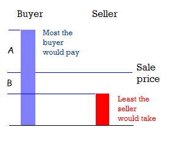

This is a topic that I’ve been mulling over in my head for a little while now, but hang in there with me as I stumble through it, because the conclusions aren’t fully formed.
I’ve noticed that often the concept of the value of something is linked to its price. If someone is willing to pay $50 for an object, then it is considered that they value it as worth $50. If we add up all purchases across a country, it is equal to that country’s GDP, a measure of the value created by that country in that year.
However, the aspect of valuing things doesn’t sit well with me. When I buy something, I don’t feel that the more I pay, the more value I’m getting. In fact, the reverse is generally true, and I imagine most people feel the same. Also, I think different people may place different values on an object, even if they pay exactly the same price for it. It seems that price doesn’t explain value, at least not completely.
Another explanation that has occurred to me is that value is not tied to an object but to a transaction. Clearly a transaction (between a willing buyer and seller at arms-length, etc.) will go ahead only if it generates value for both parties. Otherwise there’s clearly no point. And there are obvious cases when a transaction won’t go ahead: when the price is too much for the buyer, or if the price is not enough for the seller. So, this gives us a framework to identify how much value is being created.
Excuse my poor excuse for an illustration. Hopefully you can see that ‘A’ is the difference between the price of a transaction and the most the buyer would’ve spent, and ‘B’ is the difference between the price and the least the buyer would’ve accepted. So, in this interpretation, the value of the transaction to the buyer is A, then value of the transaction to the seller is B, and the overall value created by the transaction is A + B.
Out of A and B, it is probably B that is the best understood. In some way it corresponds to the seller’s profit, or perhaps risk-adjusted profit. But not always, since the seller may be willing to make a loss in order to recover some money for their stock. So, in this version of value, based on the fact that a transaction will occur only if both parties see some value in it, a technical loss (sale price less than nominal cost) must still be value positive.
The value A is not easily described since most people don’t explicitly calculate the most they would be willing to pay for their milk, eggs, petrol etc. and are even less likely to tell you about it. However, one exception is in auctions. (Hopefully) most potential buyers at an auction have figured out the most they would be willing to pay. Although, their upper limit may be more influenced by the amount of money at their disposal than by the benefit they will gain through possessing the item. (It may turn out to be impossible to accurately estimate A in most situations.)
As mentioned before, the overall value created from each transaction is A+B, which is also the difference between the most the buyer would pay and the least the seller would take. This number is independent of the price chosen for the transaction, and is clearly “better” the more the expectations of the buyer and seller diverge.
It would be interesting to see what figure we’d get if we added up the A+B numbers for all the transactions that occurred in a country for a year, and compared it to the GDP. I think it would provide a more accurate representation of the economic value created.
Related articles by Zemanta
- Did The Great Depression End In 1933? (themoderatevoice.com)
- IMF policies deepened financial crisis, says CEPR (guardian.co.uk)
![Reblog this post [with Zemanta]](http://img.zemanta.com/reblog_e.png?x-id=bb752fa5-e3b0-476e-996c-3a89da39ec2d)
![Reblog this post [with Zemanta]](http://img.zemanta.com/reblog_e.png?x-id=2bfbde9c-406c-43bf-8be1-7b72084921f6)

![Reblog this post [with Zemanta]](http://img.zemanta.com/reblog_e.png?x-id=43b0c196-b216-4b29-ab52-b0cd61dd79c0)

![Reblog this post [with Zemanta]](http://img.zemanta.com/reblog_e.png?x-id=2cde76bc-c83e-449f-a222-9b6fa7c7a2f4)
![Reblog this post [with Zemanta]](http://img.zemanta.com/reblog_e.png?x-id=3e606f81-df0d-442b-a4be-29a1703e1a69)